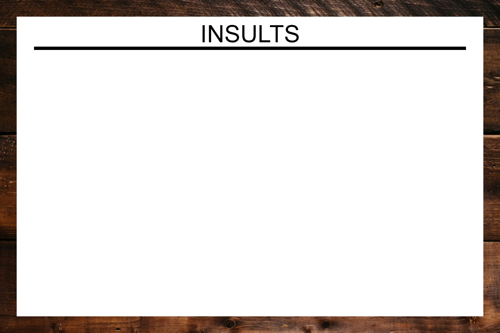
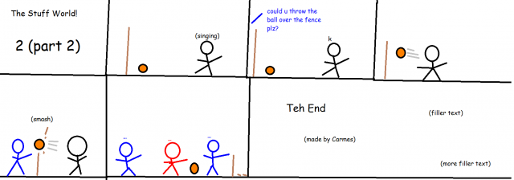

"diet pig soop???//"
$5.00 | ~8 ghost dollars | ⭐25 coins
Does not include potential cost from surprise mechanics, purchases from Shef Kerbi's Apparel or preordering the Special Edition
-------------------------
ANNONMENT
from opposum box man
Hello, we here at the Dreemlend Branch have heard PETA's complaints and your desire to assist us, to which we thank you. We also thank PETA, and we will be thanking them by sending them a free batch of our newly developed Insult Boxes, each containing a random insult. We, unfortunately, ran out of insults so we are asking you for more. If you have any insults, please put them up on the Insult Board so we may package them together along with our own insults.

Of course, there is still the matter of PETA pressing charges and making false claims. We are currently working on disproving these false claims, and you got to help us. If you need a reminder on what kinds of claims we need you to acquire evidence in order to disprove, check out the list below.
2. We invented organ confetti.
3. We shipped a swarm of bees internationally without prior knowledge from broder control.
If you do manage to find evidence disproving all three claims, we will make sure your efforts do not go unappreciated and we will send you a special reward.
PRISON BREAKING NEWS
by CrazeePi's Disembodied Voice
Recently, large-time jerk "Knookles" managed to escape from prison and has begun a rampage across the entirety of popp stah. "How could this possibly happen?" asks one Dreemlender, "AM KNOOKLES, AWARHFAIJIDISJAFA," asks another. We managed to get a photo of the completely deranged jerk so you know who to run and scream from.

Currently, the plan is to create another worp star so we can send Knookles to the moon and let Canada deal with him.
NEWS
written by Apple the Cat
Apple the Cat has gone to jail until this bulletin comes out for being a bad boy so there won't be any news articles written by him in this bulletin sorry

Pancake Factories Exploded
by Carmes
5 pancake factories around Dreem Lend have exploded.
We think it is a guy called Marre Rio.
Teddy Bears Inc goes bankrupt
by Carmes
A company that made teddy bears went bankrupt after being sued for putting lava inside their teddy bears.
Nobody in the whole of Dreem Lend bought anything from them, though.

Now I don't wanna give my own opionion but...
OPIONION WITH SHEF KERBI AND BON STARBUCKLE
I have no idea where Bon Starbuckle went. I assumed he was on holiday with his cat but he may be held hostage by PETA I don't know.
So we told you Shef Kerbi News Network fans on our Scratch page that you could post anything with the #SKNN hashtag and you could end up in our paper! In this episode, we'll respond to some of your feedback with the new SKNN format, as well as show some of your cool stuff!
We began this issue's section with
"diet bathwater is back in stock"
and here were your responses:
genericphysicalobject wrote:
"PETA? More like 🅱️ETA HA"
I have never seen the 🅱️️ emoji in italics before and it scares me, and thank you, I'll send that epic roast to the opposum box man.
Someone (possibly Carmes) wrote:
"I sneaked into the opossum box factory and found 2 things:
A malfunctioning machine that attempts to put opossum food into boxes, although some boxes were missed, some of the food was on the conveyor, and some boxes had around ten tons of it in. I think that's why there are dead opossums in the box. (btw all of the opossums were put into the box alive) I saw a box being tipped into the conveyor, that had the Springer Logo on it, that contained what looks like the organ confetti."
Not sure how you were able to post a new line character in our official SKNN Scratch Page™, but ok.
Thanks for the evidence, it will be very helpful for the Opposum Box man in court
Reali decided to send something through the opionion column (which is something we usually don't do), but anyway.
Reali wrote:
"I GOT THE EVIDENCE!!!!!!!!!!!!!!!!!1!!!!"
That comment was sent along with this image:

It's great that you managed to capture that Reali, since I was unable to since Kerbipedia's servers were down for some reason for a few days.
133313131310e wrote:
"Like my garage?"
We were unsure what 133313131310e meant by that until they sent this image through the email gram chat instant messenger

So that's where all the diet bathwater went. That's cool, because we're discontinuing diet bathwater on the 11th August because it's not funny anymore, although I bet all the diet bathwater fans will be creating a second hand market where you charge $2 million for one diet bathwater.
If you would like to submit your own opionion for Shef Kerbi or a question to Bon Starbuckle (or his cat), just go to our social media, on Twitter, Instagram or Scratch.
But prefably Scratch because that's what everyone uses
----------------
COMIX
by Apple the Cat and Carmes
Apple the Cat - Candy Sadness

Carmes - The Stuff World! 2: Part 2

weather
by Zeke Teddy
today it's actually getting close to a semi decent temperature, max of 14 and min of 3
tomorrow is going to be max 15 and min 3, but rain because we can't have nice things
{kind=link}
THANK YOU FOR WATCH. PLEASE TUN E IN NEXT TIME FOR MORE NESW

Shef Kerbi News Network follows the guidelines and conventions set by the 1984 High Quality News Act of Dreem Lend, which states
that any news published is to be of a high quality, is to remain unbiased and to show all sides of a news report, does not attack anyone, and protects the privacy
of people whose identities don't want to be revealed.
If you would like to file a complaint regarding content use, please message SKNN through our Scratch account. We also have a Twitter and Instagram account if you
prefer.
Shef Kerbi News Network respects the ancestors of Cappy Town, and understands that they are the reason why Dreem Lend exists.
Shef Kerbi News Network is proud to be a subsidiary of Shef Werld
this website is best viewed with Ned's Escape